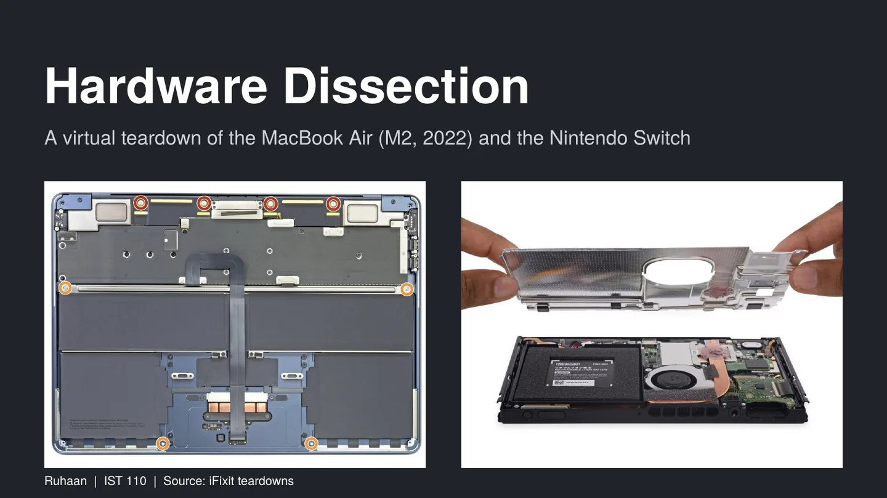
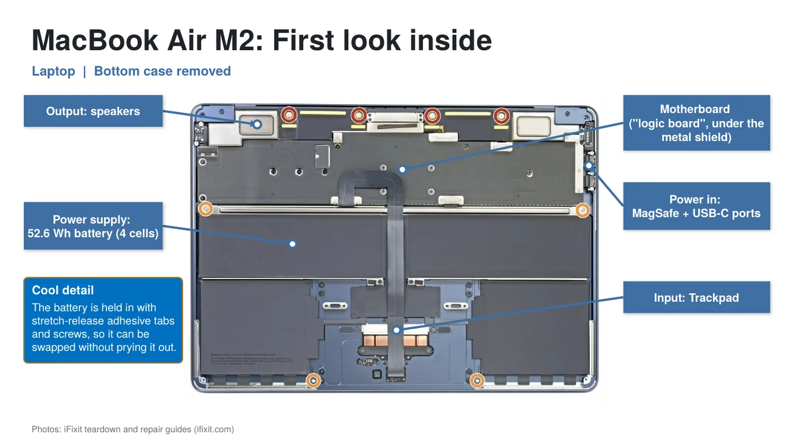
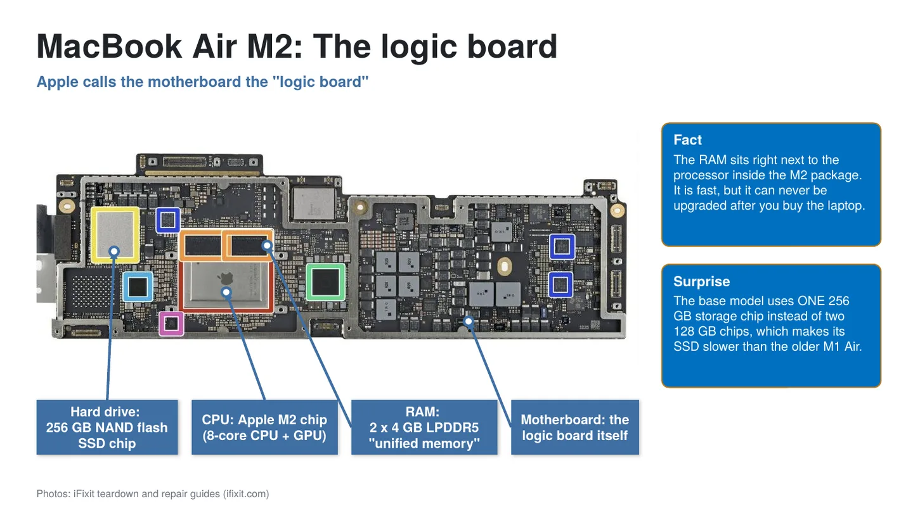
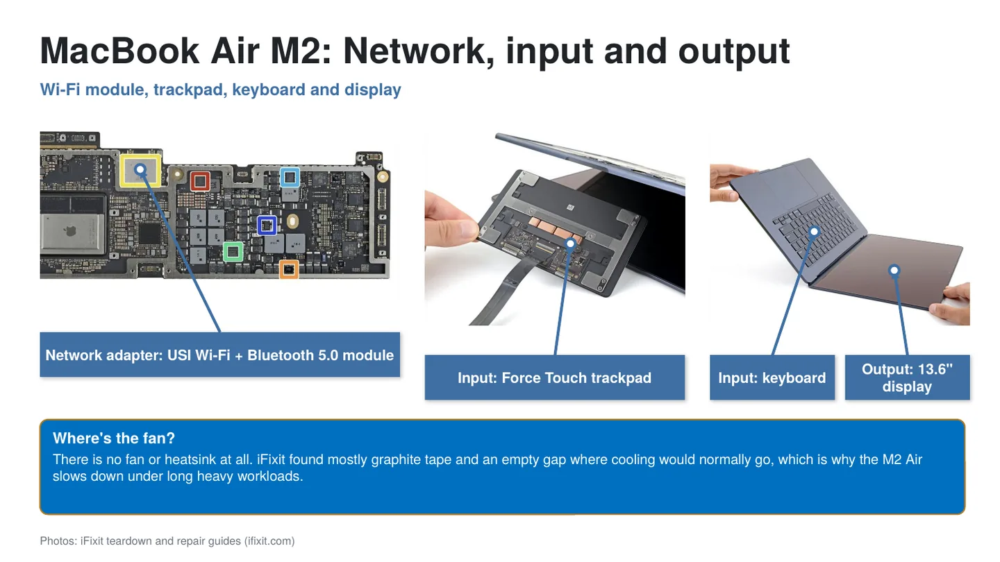
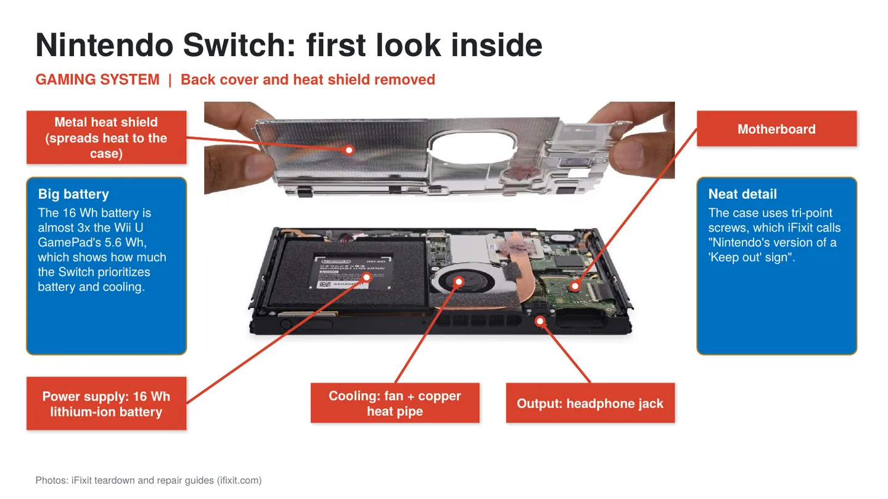
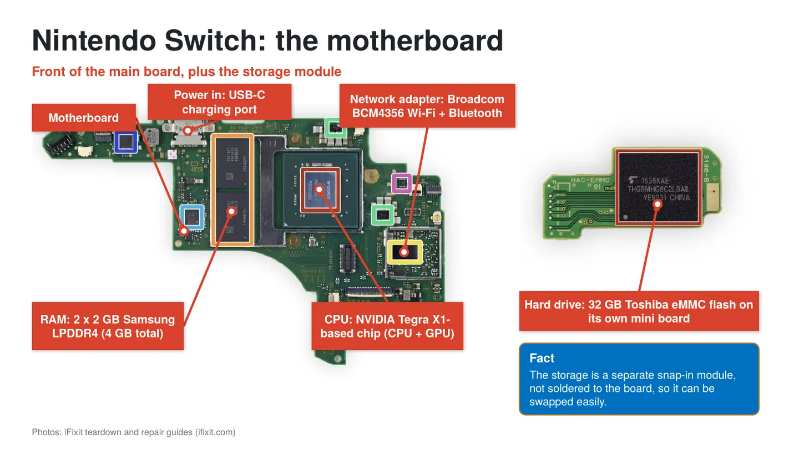
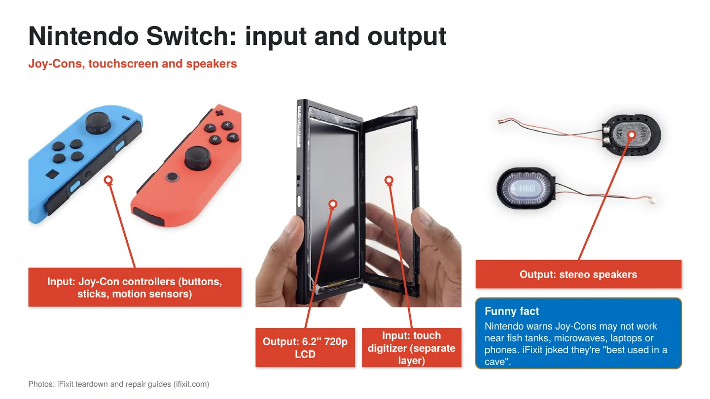
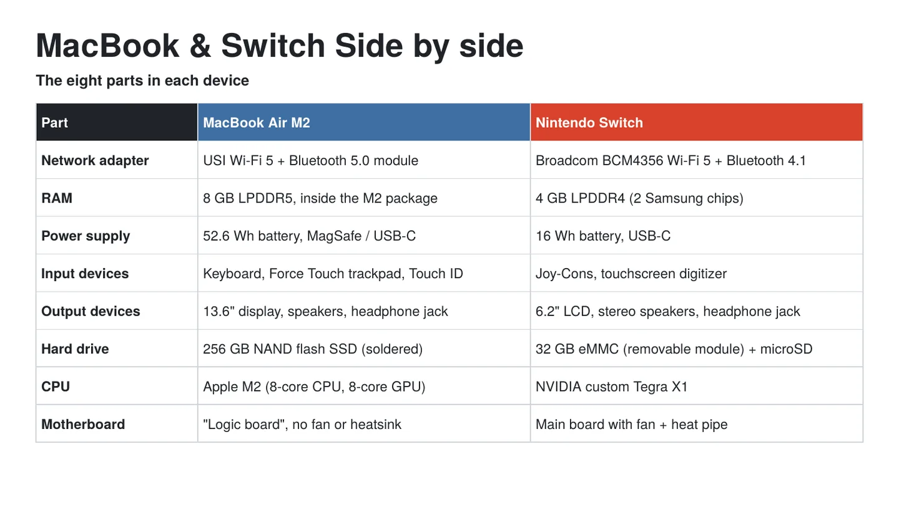
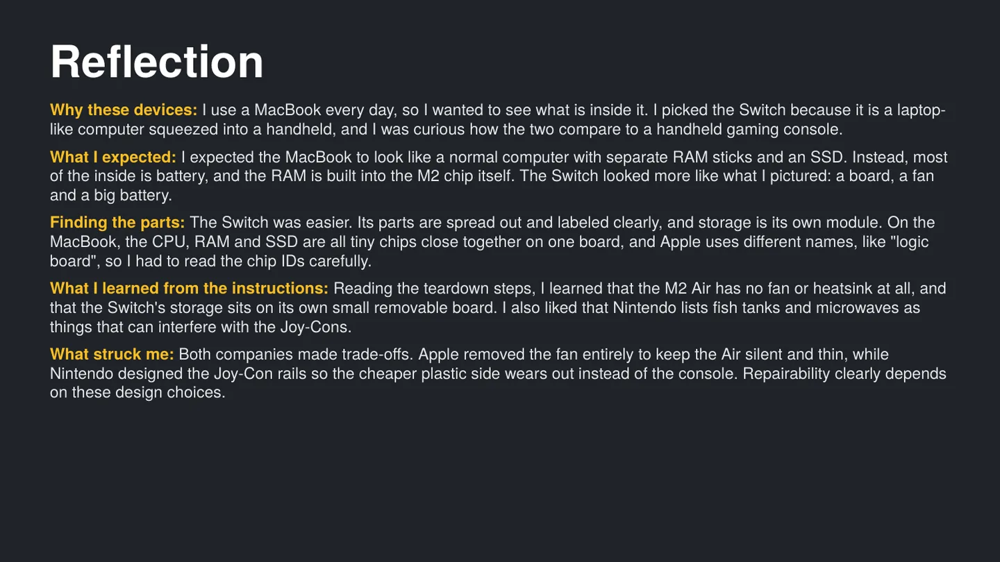

L04 Hardware dissection lab
The task
Use iFixit teardowns to take apart a laptop and one other device virtually, and label eight parts in each: network adapter, RAM, power supply, input, output, storage, CPU and motherboard.
What I made
A nine-slide deck taking apart a MacBook Air (M2, 2022) and a Nintendo Switch, with every part labelled on iFixit's photos. The MacBook surprised me most. It has no fan or heatsink at all, and its RAM sits inside the M2 chip package, so it can never be upgraded. The Switch was easier to read: its parts are spread out, and its storage is a separate module that snaps in.

See the other 8 slides
















Download the original (PDF, 9 slides, 1.1 MB)
Feedback
This is great, good job!
My instructor
Reflection
The MacBook Air is my own laptop, so I wanted to see what's actually inside it, and the Switch is basically a computer squeezed into a handheld, which made it a good contrast.
The MacBook surprised me most. There's no fan or heatsink at all, and the RAM sits inside the M2 chip, so it can never be upgraded. That's a trade-off I didn't know I'd made when I bought it: thinner and quieter, but no way to extend its life later.